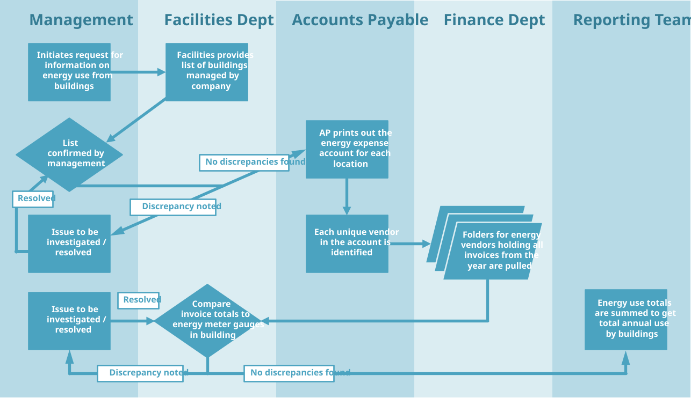

3. Pursuing future-fitness in a systematic way
A disciplined approach to implementing and documenting policies and internal control processes is important in any business, because it helps management to systematically track, review and modify the steps being taken to achieve any given outcome. Adopting the Future-Fit Business Benchmark is no exception.
This chapter describes what formal policies and internal controls are, and provides guidance on how to create, implement and document them.
3.1 What are internal controls?
This section refers to several terms whose meaning may not be immediately apparent:
Policies are high-level rules or general concepts used to guide or influence the actions of employees in specific circumstances.
Procedures are series of steps that describe the way employees should consistently respond to a situation or approach a task.
Controls are the means by which management addresses risks, by influencing the actions of specific areas of the business to align with the objectives of the company. They are checks and balances to ensure the business stays on target. ‘Internal’ controls refer to these checks and balances occurring within the business itself, as opposed to being imposed by third parties.
Controls, policies, and procedures
There can be some overlap between these concepts. Policies and procedures can be used as internal controls in a company, but not every policy or procedure is a control.
Example: A company wants to put in place a control to prevent the sale of defective products, so it develops a policy stating that “No product will leave the factory without being checked.” To achieve this goal, the company implements a procedure whereby a supervisor checks the functionality of each product before it is packaged and shipped.
What makes controls effective will vary depending on a company’s industry and other circumstances, but there are some generally applicable aspects of effective controls that can help companies achieve their desired outcomes.
The following guidance should help companies to ascertain if the controls they have in place are sufficient, and to design and/or evaluate policies that seek to steer company actions in pursuit of Future-Fit outcomes. This information should be particularly helpful for any company that may eventually wish to have its Future-Fit performance or processes assured by a third party.
3.2 What are internal controls used for?
Internal controls can help individual employees and departments maintain alignment with organizational objectives, allow management to be confident in the information they use to make strategic decisions, and keep the company working efficiently and effectively.
This is particularly true when it comes to pursuing future-fitness, because reaching the levels of social and environmental performance required to become Future-Fit will likely require concerted and coordinated action across the whole business and over a significant period of time. Using internal controls and setting formal policies ensures that employees understand the objectives of the broader company and helps clarify the role their daily responsibilities play in achieving those broader objectives.
3.3 Types of controls
Directive controls
Directive controls are meant to ensure that employees understand and are aligned with the objectives of the company. They are active before the activity they relate to takes place. Examples of directive controls include job descriptions, setting of departmental targets, and organizational mission statements.
Preventative controls
These controls are meant to reduce the likelihood that errors occur. They are active while the activity they relate to takes place, which means they are a part of the day-to-day operations of a business. Examples of preventative controls include authorization and approval processes, checking calculations before the resulting figures are reported, and ensuring an appropriate segregation of duties within the company (see note below).
Detective controls
These controls are meant to determine whether the process in question is being applied as intended. They are active after the relevant activity takes place. Detective controls are used to identify errors, allowing companies to make corrections and limit an error’s impact. Examples of detective controls include checking the calibration of measurement tools at the end of a shift, or performing random checks to see how measured values compare against forecasts.
Segregation of duties
In the context of internal controls, segregation of duties refers to designating different actors in the control process to be accountable for key steps along the way, to prevent errors and dissuade fraud. Steps to be separated include custody of assets, authority for approval, and responsibility for record-keeping.
For example, when calculating whether employees are paid a living wage, Employee A might have access to the employee payroll records (custody), Employee B would be responsible for performing the calculation of the living wage thresholds in the areas the company operates (recording), and Employee C would review and approve the work for inclusion in a management report (authorization).
3.4 Steps for creating effective internal controls
When new internal controls are required to shore up the current risk environment, or to respond to changes in the business, the following steps can help ensure that the new controls will be effective in helping the business achieve its objectives.
Plan the controls needed
Identify the stakeholder that you are trying to affect.
- Are you trying to ensure product quality for customers, prevent workplace accidents for employees, increase data accuracy for management, or minimize emissions for the environment and/or local communities?
Clearly define the outcome you are seeking to influence for that stakeholder.
- Do you want to prevent a negative outcome from happening? Encourage a positive behaviour? Reduce the variability in a service provided?
Identify any risks that threaten the delivery of those outcomes.
- E.g. external environmental factors, inconsistent approaches to similar problems, lack of precision from machinery or employees.
Actively engage the target stakeholder group during the control creation process, or when changes are being made that might impact the stakeholders’ experience.
- E.g. for an employee health policy, employees or their representatives must be included in the discussion during policy development.
Determine which risks can be mitigated by using controls.
Optional guidance on planning controls
Create and document contingency plans to prevent the risk of progress toward objectives being interrupted by the absence of key employees, breakdown of equipment, or issues with third-parties.
Implement the planned controls
- Design and implement controls to mitigate the risks identified.
- Allocate time and budget for taking corrective action in the event that objectives are at risk of being missed.
- Describe and document the objectives of each control, and make them available to the employees / stakeholders responsible for enacting them.
- Clearly define the line of accountability for the outcomes of each control, including a member of the executive team ultimately responsible for the success of the initiative.
Optional guidance on internal control implementation
Ensure that sufficient resources are available for the project team268 to be able to successfully design, implement and operate the required controls.
Give employees the information and/or training needed to be able to view their own actions in the context of their impact on the broader organization.
Communicate objectives beyond the core project team so that other relevant groups in the company are aware of them, in order to minimize internal resistance and duplication of effort.
Monitor performance, and adjust when needed
- Document qualitative and quantitative outcomes of internal controls to be reviewed on a regular basis by management.
- Take appropriate steps to adjust the controls as needed when they are found not to be operating as intended, or when changes to the operating environment may undermine their effectiveness.
3.5 Guidance on mapping processes and internal controls
Mapping organizational processes
For business processes which are used to measure Future-Fit indicators, or whose outcomes are measured by them, documenting the steps involved in the process can be a helpful exercise. Writing out the actions from the point of initiation through to the final outcome can be done either in narrative form, by creating diagrams, or ideally as a combination of the two. Once all of the steps in the process have been mapped out, the internal controls which keep the process on track and prevent errors from occurring should be identified and highlighted. Formally documenting internal controls in this way allows managers to evaluate if the current approach is the best way to address the relevant risks, and helps identify any gaps or redundancies in the control structure.
Clearly documenting the company’s processes will also make it easier for anyone who is unfamiliar with the company to quickly understand which departments, systems and job functions are involved in each step, to identify areas where things might go wrong, and to see which internal controls are in place to prevent potential problems or to quickly detect them if they occur. This is particularly helpful for new employees to understand how the company operates and where they fit in, and will also help make assurance engagements more efficient and effective.269
Creating flowchart diagrams
A useful way to depict business processes is to create a flowchart that shows the sequence of activities involved, and what happens at decision points. To create a flowchart, it is often easiest to start from the final outcome of the process and work your way back toward the start. Identify any activities performed, measurements taken, people involved, and inputs along the way, until you get to the first action that puts the process into motion. These diagrams should incorporate both the individuals and departments that are actively involved or are primarily responsible at each stage, and also those who provide inputs, receive products, store documents or are otherwise impacted along the way.
Once each piece of the process has been identified, they should be organized in sequential order, with arrows showing the progression from one step to the next. When a step can lead to two or more different outcomes depending on the result of a decision or check, each possible path should be shown along with the reasons that the process would follow that particular route.
To provide an additional layer of clarity, the flowchart can be set up so that the steps assigned to each participating department or individual are grouped together clearly. This can be accomplished by sectioning off columns or rows for each distinct participant, creating ‘lanes’ that show their involvement. Users can further supplement these flowcharts with a written narrative to help explain what is happening along the way (see Figure 1 for an example).
Figure 1: Sample flowchart showing process for determining energy used by buildings.

Companies should aim to map out the process as it happens in reality, instead of how it works ‘on-paper’ or ‘in theory’. This will help stakeholders gain genuinely useful insights from the process. To further ensure that the company has an accurate depiction of the process, the final flowchart should always be reviewed with the various functions and departments that participate in the process.
There are many resources available on the mechanics of creating a flowchart, such as what shapes to use, different format options, and how to create columns to show ownership over different aspects. There are free guides that can be found online270, as well as specialized flowchart design programs available for purchase.
3.6 Evaluation of controls
When companies initially adopt the Benchmark, a common question for goals which employ policy-based indicators is “We use ‘Control X’, is that enough to meet the criteria?”
To help companies determine whether their internal controls are sufficient, and to ensure that the Benchmark is being consistently applied, one approach would be to implement Directive, Preventative, and Detective controls for each relevant Benchmark objective.
While it may not always be appropriate to have each of these types of internal controls in place for a specific criterion or objective, striving to do so means that for any given outcome described by the Benchmark, employees will: (a) know why they are required to adhere to a policy or follow a procedure, (b) be subject to safeguards that help to avoid failure to meet the intended objective, and (c) have checks and balances in place to help identify areas where the controls are falling short.
It also means that when the company’s board or external stakeholders ask what is being done to pursue a particular Future-Fit goal, the company will be well-positioned to give a comprehensive and confident answer. Similarly, for companies that intend to have their reports assured, proving the effectiveness of the internal controls used during the reporting period will be key to the process. See the section on Assurance for more detail on obtaining assurance over Benchmark data.
3.7 What is a formal policy?
A formal policy is a written document that has been approved by human resources or company management. Formalizing policies enables a company to have a standard approach to a specific topic or situation. This helps ensure that when the relevant situation arises, it is addressed consistently. When policies are absent or only exist informally, steps are more likely to be missed, issues might be ignored, and employees’ individual judgment will be relied upon more heavily.
A common example is around how employee concerns are treated. Most companies which have not actively addressed employee concerns before will reply that there is an informal policy where an employee raises any issues to their manager, and the manager either resolves or escalates the issue. The reason that the Benchmark specifies that formal policies are needed is that in this example, the manager receiving the concern may dismiss an issue that they judge to be unimportant, but which might be very significant to the employee raising it, or to the company itself. Having formal policies is an important step towards achieving consistent results across your company.
3.8 Useful links
COSO (Committee of Sponsoring Organizations of the Treadway Commission)
Formed in 1985, COSO was formed via contributions from five major accounting, finance and audit agencies in the US to help provide guidance on financial governance and fraud prevention for a range of stakeholders. COSO is a recognized thought leader on the topic of internal controls, and provides some free materials along with more detailed guidance available for purchase on its website.
ISO 9001:2015 application guidance
ISO 9001 also uses a process-based approach for the purpose of designing a quality management system. The Plan, Do, Check, Act approach outlined therein contributed to the guidance offered here [199].
KPMG – Internal Control: A Practical Guide
In 1999, KPMG issued a guide to help businesses understand and act on the implications of the “Turnbull Report” (Guidance for Directors on the Combined Code) issued by the Institute of Chartered Accountants of England and Wales (ICAEW) [200]. The descriptions of the objectives of internal controls, and context for their use helped influence the descriptions in this section.
Bibliography
‘Project team’ refers to the person(s) responsible for carrying out the tasks required to meet each objective.↩︎
See the section on Assurance for more information on what companies can do to prepare when getting their Future-Fit data assured.↩︎
For example, see “System Based Audits” from pempal.org (a World Bank & UK FCDO backed learning site), “Flow Charts for Audit Purposes” from the University of Mississippi, or “Practical Flowcharting for Auditors” from the Institute of Internal Auditors.↩︎